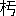

――大評判の怪窟――探檢の勢揃――失敗の第一日――二日目――迷信家の大氣

――大發見？――探檢の本舞臺――最初の入窟者――怪窟の構造――其結果――
大評判の
怪窟※
［＃感嘆符三つ、262-10］それは、
東京と
横濱との
中間で、
川崎からも
鶴見からも一
里足らずの
處である。
神奈川縣橘樹郡旭村大字駒岡村瓢簟山の
東面部に
其怪窟はある。
發見したのは、
明治四十
年四
月の四
日で、それは
埋立工事に
用ゐる
爲に、
山の
土を
土方が
掘取らうとして、
偶然に
其怪窟を
掘當てたのであるが、
窟の
中から
人骨や
武器や
玉類や
土器等が
出たので
以て、
圖らず
迷信家の
信仰心を
喚起し、
或は
又山師輩の
乘ずる
處となつて、
忽ちの
間に
評判大評判『お
穴樣』と
呼び『
岩窟神社』と
唱へ、
參詣人引きも
切らず。
日に
何千
人、
時としては
何萬人と
數へられ、お
賽錢だけでも
日に
何百
圓といふ
揚り
高で、それに
連れて
今までは
寂しかつた
田舍道［＃ルビの「ゐなかみち」は底本では「ゐなかみつ」］に、
軒を
並べる
茶店やら
賣店やら、これも
新築三百
餘軒に
達したとは、
實に
驚くべき
迷信の
魔力※
［＃感嘆符三つ、263-9］
面喰つたのは
神奈川縣の
警察部で、
斯くの
如き
迷信を、
成すが
儘に
増長［＃ルビの「ぞうちやう」は底本では「ぢうちやう」］さしては、
保安上容易ならぬ
問題であるといふので（それに
濫りに
神社呼はりを
爲る
事は
法律の
許さぬ
處でもあるので）
奉納の
旗幟、
繪馬等を
撤せしめ、
窟から
流出する
汚水［＃ルビの「をすい」は底本では「をす」］を
酌取るを
禁じ、
警官を
出張さして
嚴に
取締を
付けたのであるが、それでも
參詣人は一
向※［＃「冫＋咸」、U+51CF、263-13］じ
無い。
晝夜の
差別なく、
遠近から
參集する
愚男愚女は、一
里の
道を
引きも
切らず。
其所で、
其岩窟なる
物が、
抑も
何んであるかを
調べる
必用を
生じ、
坪井理學博士の
第一の
探檢調査となつた。それは九
月十二
日であつた。
實は
博士をわざ／＼
勞するまでも
無かつたので、これは
古代の
葬坑で、
横穴と
通稱するもの。
能く
調べたら
全國到る
處に
有るかも
知れぬ。
現在に
於ては、九
州、四
國から、
陸前、
陸奧、
出羽の
方まで
掛けて三十五ヶ
國に
亘り
發見されて
居るので、
加之横穴は一ヶ
所に
群在する
例が
多いのだから、
穴の
數を
算したら、どの
位有るか
知れぬのである。
中で
最も
名高いのは、
埼玉縣の
吉見村の百
穴（
實數二百四十
餘）である。
それから、
今度發見された
駒岡附近にも、
既に
已に
澤山横穴［＃ルビの「よこあな」は底本では「よつあな」］が
開發されてあるのだが、
扨て、
果報なのは
今回のお
穴樣で、
意外の
人氣を
一個で
背負つて、
眞に
希代の
好運兒、
否、
好運穴といふべきである。
横穴は
何處までも
横穴であるが、
内部の
構造に
多少注意すべき
點もあり。それから
瓢簟山の
頂上に
於て、
埴輪土偶を二
個發見した
關係から、四ヶ
處の
隆起せる
山頂を
以て、
古墳では
無いかといふ
疑問を
生じ、
若し
其隆起せる
山頂が、
瓢簟形か
或は
前方後圓の
古墳であるとすれば、
其山頂の
古墳と
山麓の
横穴と、
如何なる
關係を
有するであらうか。
山頂のが
主墳で、
山麓のが
殉死者を
葬つたのでは
有るまいかといふ、
斯うした
疑問をも
生ぜられるのである。
多くの
例に
於ては
古墳（
高塚）と
横穴とは、
別種に
考へられて
居る。よしや
同所に
有らうとも、
同時代とは
考へられて
居らぬ。
高塚よりも
横穴の
方が、
時代に
於て
若いと
考へられ
居るので、
高塚は
高塚で
或時代に
築かれ、
横穴は
横穴で
其後に
造られると、
斯う
大概考へられて
居たのであるが、それを
坪井博士は、
同時代に
解釋を
下されたのである、
少しく
考古趣味を
有する
者は、
變だなと
思はざるを
得ないのであるが、それには
又それだけの
理由が
有る。
それは
瓢簟山の
地形である。
此地形が
主墳の
周圍に
陪塚を
造るをゆるさぬ。
即ち
主人を
葬つた
塚の
近くに、
殉死者の
塚を
造るだけの
餘地が
無いので、
已むを
得ず
山麓に
横穴を
造つたといふの
説である。
果して
然らば
學術上の
大發見である
［＃「大發見である」は底本では「犬發見である」］。
それで、
兎も
角も、
山頂の
凸起する
地點に
調査を
試み、
果して
古墳であるか
否かを
確める
必用［＃ルビの「ひつよう」は底本では「ひつえう」］を
生じたので、
地主側の
請願もあり、
博士はいよいよ十
月七
日より
數日間此所に
大發掘を
擧行せらるゝ
事となつた。
此豫報が一たび
各新聞に
由つて
傳へられると、
迷信非迷信に
關らず、
江湖は
大いなる
注意を
之に
向けて
拂つた。
何が
出るだらう？
改めて
余は
茲に
言ふ。
或る
意味に
於ての
大怪窟が、
學術の
光に
如何照らされるであらうか。
深き
興味を
以て
此大發掘を
迎へざるを
得ない。
其所で
余は、一
方に
於ては、
新聞記者の
職務を
以て、一
方に
於ては、
太古遺跡研究會幹事の
本分を
以て、
坪井博士監督の
下に
行はれる
所謂お
穴樣大發掘の
參觀［＃ルビの「さんくわん」は底本では「さんくわい」］に
出張する
事とはなつた。
東京朝日新聞の
記者にして
考古家中に
嶄然頭角を
露はせる
水谷幻花氏と
同行して、
余は四十一
年十
月七
日午前九
時（
曇）
鶴見の
電車停留場に
到着すると、
間もなく
都新聞の
吉見氏、
中央新聞の
郡司氏が
來た。
其所へ
坪井博士は、
石田理學士、
大野助手、
野中事務員を
同行して、
電車で
來られた。
續いて
帝室博物館員、
高橋、
平子、
和田、
紀の
諸氏が
來る。
新聞記者としては、
國民の
松崎、
平福、
郡司の三
氏、
時事の
左氏、
東京毎日の
井上氏、
毎日電報の
近藤氏、やまとの
倉光氏、
日本の
中村氏、
萬朝の
曾我部山岡二
氏、
報知の
山村氏、
城南の
高橋氏、
其他讀賣、二六、
東京日日等、
悉く
揃つた。
これに
出迎への
村長、
地主、
有志家等、
大變な
人數である。それが
瓢形に
駒岡と
記入したる
銀鍍金の
徽章を一
樣に
着け、
同じ
表の
小旗を
立てた
俥に
乘揃つて、
瓢簟山へと
進軍？したのは、なか／＼のお
祭り
騷ぎ※
［＃感嘆符三つ、267-11］
一先づ一
同は、
地主の一
人たる
秋山廣吉氏の
宅に
着き、
其所から
徒歩で、
瓢簟山へ
行つて
見ると、
山の
周圍に
鐵條網を
張り、
警官十
餘名、
嚴重に
警戒して、
徽章なき
者は
出入を
禁じてある。
山麓には、
紅白だんだらの
幕を
張り、
天幕を
吊り、
高等官休憩所、
新聞記者席、
參觀人席など
區別してある。
別に
喫茶所を
設けてある。
宛然園遊會場だ。
其所へ、
周布神奈川縣知事が
來る。
橋本警務長が
來る。
田中代議士、
樋口郡長、
曰く
何、
曰く
何、
斯ういふ
時には
肩書が
必用［＃ルビの「ひつよう」は底本では「ひつえう」］と
見える。
高等野次馬の
數、
無慮百
餘名と
註せられた。
其所で、
第一の
探檢が
所謂お
穴樣の
内部である。
前には
此横穴の
前まで、
參詣人を
寄せたのであるが、それでは
線香で
燻べたり、
賽錢を
投付けたりするので、
横穴の
原形の
毀損する
虞れが
有る
爲に、
博士は
取調上の
必用から、
先日警察に
交渉し、
入口から三
間許り
隔て、
棒杭を
打ち、
鐵條を
張り、
人を
入らしめぬ
樣に
警戒を
依頼されたのだ。
今日は
併し、
其博士が
先導であるから、
我々は
自由に
内部まで
入るを
得た。
但し、五六
人宛交代［＃ルビの「かはりがは」は底本では「はかりがは」］りである。
穴は
間口七
尺五
寸に、
奧行八
尺の、
高さ四
尺、
長方形の
岩室で、それに
柄を
附けた
樣に
入口の
道がある。
突當りに一
段高い
處があつて、それから
周圍と
中央とに
淺い
溝が
掘つてある。
之は
水の
流出を
謀つたのであらう。
右の
如く
純然たる
古代の
葬坑で、
住居跡なんどいふのは
愚説の
甚しいのである。
横穴の
中でも
格別珍らしい
構造では
無いが、
床と
溝とが
稍形式に
於て
異なつて
居る
位で、
之を
信仰するに
至つては、
抱腹絶倒せざるを
得ない。
扨て
坪井博士は、
石田學士大野助手等と
共に、
豫て
集合さしてある
赤鉢卷の
人夫三十
餘名を
督して、いよ／＼
山頂の
大發掘に
取掛り、
又一
分隊を
派して、
瓢箪山西面に、
半埋もれたる
横穴、三
箇の
發掘を
開始されたが、
間の
惡い
時には
何處までも
惡いもので、
東面の
地主と
西面の
地主とは、
感情の
衝突か
何［＃ルビの「なに」は底本では「なか」］か
有つて、
西面の
方へ無
斷で
手を
附けるとは
怪しからんとか
何とか、
少しの
手違ひに
突入つて
喰つて
掛り、
山上で
大激論が
始まり、
警務長や
郡長や
代議士などが
仲に
入つて、
兎も
角も
歪なりの
圓滿？に
局を
結び、一
時中止して
居た
發掘を
續ける
事となつたが、
西面北部の
横穴は、
乞食が
曾て
住んで
居た
事があり、
西面南部の二
箇には、
子供が
入つて
遊んだ
事もある。
然うして二
箇は
内部で
連絡して
居るといふ
事が
分つたので、
何んだか
張合は
拔けて
來る。
小雨は
降り
出す。
新聞記者連はそろ／＼
惡口を
始める。
地主連はまご／＼して
居る。
惰氣滿々たる
此時に、
南部の
横穴の
方で、
坪井博士は、一
聲高く。
『
出た※
［＃感嘆符三つ、270-6］出た※
［＃感嘆符三つ、270-6］』
忽ち
全山の
高等野次馬は、
我おくれじと
馳付けて
見ると、
博士は
笑ひながら、
古靴の
片足を、
洋杖の
先に
懸けて
示された。
塵と一
處に
穴の
中へ
落ちて
居たのを、
博士が
戯れに
取出されたので、
之は一
抔［＃ルビの「ぱい」は底本では「ぱく」］頂戴したと、一
同クツ／＼
笑ひ。
這んな
事で一
向に
要領を
得ず、
山頂の
方では、
僅かに
埴輪の
破片（
雲珠、
鞆等）を
見出したのみ、それで
大發掘の
第一
回を
終つた。
余は
折角着込んで
行つた
探檢服に、
少しも
泥を
附けずして
宅へと
引揚げた。
大學連中は
皆泊り
込みである。
八
日（
曇後晴）
余は
午前十
時頃に
瓢箪山へ
到着して
見ると、
發掘は
既に
進行して
赤鉢卷隊は
活動して
居るが、一
向に
變つた
事は
無い。
それでも、
西面南部の二
箇の
横穴は、
大概發掘を
終り、
其岩壁が
欠壞して、
奧で
貫通して
居る
事が
判明し、
又石灰分が
岩面の
龜裂の
部分から
漏出して、
小鐘乳石を
垂下して
居るのを
發見した。
一
時は
天井から
骨がぶら
下つて
居るの、セメントで
内部が
塗［＃ルビの「ぬ」は底本では「ね」］つて
有るのと、
高等野次馬の
騷ぎと
云つたら
無かつた。
それから一
方の
小なる
横穴のシキからは、
人の
大腿骨［＃ルビの「だいたいこつ」は底本では「だいたいこく」］と
指骨の一
小部分とが
出で
［＃「出で」は底本では「出て」］、
直刀の
折片、
鍔（
鐵製、
寶珠形、
透し）
脛巾金、
及び
朱塗の
土器（
彌生式土器に
類似す）
等が
出でた
［＃「出でた」は底本では「出てた」］。これとても一
向珍らしくは
無い。
それで
西面の
横穴には
斷念して、
山頂の
主墳探しに
全力を
盡す
事となつたが、
相變らず
埴輪圓筒の
破片や、
埴輪土馬の
破片等が
出る
位で、
更に
石槨に
突當らぬ。
如何も
古墳は
無いらしい。
有つたかも
知れぬが、
今は
無いのが
本統らしい。
大野助手の
顏色は、
朱塗に
成つたり
祝部色に
成つたりして
居る。
余は
其間に、
最一
度『お
穴樣』を
探檢する
必用を
感じて、
東面の
彼の
參詣者［＃ルビの「さんけいしや」は底本では「さんけんしや」］の
前から
横穴の
中に
入り、
調査を
終つて
外へ
出ると、
鐵條網に
隔てられた
［＃「隔てられた」は底本では「隔てちれた」］參詣人［＃ルビの「さんけいにん」は底本では「さんけんにん」］の
中［＃ルビの「なか」は底本では「なら」］から。
『
野郎、
俺が
今投げたお
賽錢を
踏めアがツて、
太え
奴だ。ぶン
毆るから
［＃「ぶン毆るから」は底本では「ぷン毆るから」］然う
思へツ』と
呼はる。
なる
程、
彼等が
［＃「彼等が」は底本では「彼等か」］信仰心を
以て、
遠く
此所まで
來りながら、
肝腎のお
穴には
接近する
事を
得ず。
漸く
鐵條網の
外からお
賽錢を
投げたのを、
變な
男子がノコ／＼
來て、
敬禮も
爲ず、
無遠慮に、
穴に
入つて
加之お
賽錢を
踏んだのだから、
先方の
身になると
腹の
立つのも
最も千
萬。
此奴毆られては
大變だと
余はコソ／＼と
逃げ
出した。
此日は
鐵條網に
就て
博士對警官の
小衝突が
有つたが、
勿論警官側の
誤解に
出でたので、
程なく
落着した。
這んな
事で
第二
日目も
失敗。
余は、
毎電、
東京毎日、やまと、
日本［＃ルビの「にほん」は底本では「にはん」］の
記者と
共に、
山越をして、
駒岡貝塚、
末吉貝塚［＃ルビの「すゑよしかひづか」は底本では「すよしかひづか」］の
遺跡を
過ぎ、
鶴見に
出て
歸宅した。
九
日（
晴）
昨の
如く
到着して
見ると、
新聞連［＃ルビの「しんぶんれん」は底本では「しんぶつれん」］も
今日は
少ない。
坪井博士［＃ルビの「つぼゐはかせ」は底本では「つほゐはかせ」］も
歸京の
準備をして
居られる。
博物館からは、
和田氏一人だけだ。
併し、
高等野次馬は
非常に
多い。
東面山麓の
山土の
崩壞して
堆積［＃ルビの「たゐせき」は底本では「すゐせき」］したる一
部に、
祝部高坏土器を
［＃「祝部高坏土器を」は底本では「祝部高抔土器を」］發見したので、
如何も
此所が
怪しいと、
人類學者ならぬ
土方の
船町倉次郎といふのが、一
生懸命に
掘り
進んで
居る
他、
赤鉢卷隊は
全力を
山頂に
向つて
注ぎ、
山全體を
取くづすといふ
勢ひで
遣つて
居る
間に、
鍬の
先にガチリと
音して
何か
當つた。
『
出たぞ／＼』
『
當つたぞ／＼』と
山頂は
大歡呼である。
余等は
夢中に
成つて、
驅上つて
見ると、
出たのは
出たが、
古墳には
無關係物で、
石器時代の
遺物たる、
石棒頭部（
緑泥片岩）
源平時代の五
輪塔の
頭部。
足利時代の
寶篋印塔の一
部等で、
主墳には
古過ぎたり、
新し
過ぎたり。
好い
具合に
適合せぬので、
又もや
大失望。
坪井博士は、
正午過ぎ、
用事の
爲［＃ルビの「ため」は底本では「たみ」］、
歸京されたので、
後を
大野助手が
主任で
監督して
居ると、
午後二
時頃に
至［＃ルビの「いた」は底本では「いだ」］つて、
船町倉次郎受持の
山麓から、
多數の
圓石を
發見した。
さア
今度は
本統だ。いよ／＼
掘當てた。けれども
矢張横穴であらう。
主墳では
有るまいが、
人氣の
緩んで
居る
折柄とて、
學者も、
記者も、
高等野次馬も、
警官も、
悉く
此所へ
集まつて、
作業の
邪魔となる
事夥多しい。
未だ
穴の
口が
開かぬのに
是なのであるから、
横穴發見となつたら、どんな
混亂を
生ずるか
分らぬといふので、
警戒區域内に
更に
又一
小區を
劃し、
此所には
誰も
入れぬ
事にして、それから
入窟の
順序を
豫め
定めた。
大野――
和田――
野中――それから
新聞記者を
代表して、
水谷及び
余といふ
順番である。
大得意の
船町倉次郎は、
更に
勇を
皷して
圓石を
取除くと、
最初の
地面より一
丈三
尺餘の
前面に
於て、ぽかりと
大穴へ
突拔けた。
一
同は
大動搖を
始めた。
早く
中が
見たいからである。けれども
永く
密閉せられてある
岩窟の
内部には、
惡瓦斯を
發生して
居るに
相違ない。
不用意に
入ると
窒息して
死ぬ
恐れがあるので、
先づ
蝋燭の
火をさし
入れる
必用がある。
人足が
一人進んで、
穴の
中に
片手の
火をさし
入れると、
火は
次第に
小く
成つて、
後には、ふツと
消えた。
『
危險※
［＃感嘆符三つ、275-7］危險※
［＃感嘆符三つ、275-7］』といふので
未だ
誰も
入らうと
爲ぬ。
余は
此時、
探檢服の
輕裝で、
手に
龕燈を
携へて
居た。
中に
入るのは
危險であらうが、
龕燈の
光を
射し
向けて、
入口から
内部を
照らし
見るには
差支へなからうと
考へ、
單身横穴の
入口まで
進んだ。
然うして
龕燈を
持つ
手を
横穴に
突出して、
内部を
照らして
見やうとしたが、
其光の
當る
部分は、
白氣濛々として
物凄く、
何が
何やら
少しも
分らぬ。
漸く
見定めると、
龕燈の
光が
奧壁に
突當つて、
朧月の
如く
寫るのである。
未だ
併し
入るには
危險であるから、
窟内に
酢を
散布して、
然うして
後に
入るが
好からう。それに、
第一
番には
大野氏が
入る
筈だからと
考へながら、
猶今一
度窟の
底部を
照らして
見やうとして、
龕燈を
持直す
途端に、
余の
足は
入口のくづれたる
岩面を
踏んだので、ツル／＼と
穴の
中へ
濘り
落ちた。
はツと
思つたが、
最う
仕方が
無い。
余は
既に一
歩を
横穴に
踏入れて
居るのだ。
斯うなると
日頃の
探檢氣が
生じて、
危險を
思はず、
更に
奧の
方へ
進むと、
這は
如何に、
足下に
大々蜈
がのたくツて
居る――と
思つたのは
束の
間で、
龕燈の
火で
照らして
見ると、
岩の
隙間から
入つた
草の
蔓であつた。
更に
氣を
取直して、
暗黒々の
岩窟内を
照し
見ると、
奧壁近くに
當つて
有る、
有る、
人の
骨らしい
物が
泥土に
埋まりながら
横はつて
見える。
然うして
其枕元の
方に、
錆びて
木の
如くなる
直刀が二
本置いてある。
此時余は一
種言ふ
可らざるの
凄氣に
打たれたのである。
此所は
是、千
數百
年前の
人を
葬つた
墳墓である。
其内部に
余は
生きながら
入つて
立つのである。
白骨生けるにあらぬか。
余は
死せるにあらぬかといふ、
夢幻の
境にさまよひ、
茫然として
動かずに
居る
後から、
突然、一
箇の
黒影が
出現した。
吃驚して
見るとそれは
野中氏だ。
それから
余は
氣を
取直して。
『
最う
大丈夫だ。
諸君、
來給へ』と
呼はつた。
窟外からは、
角燈、
蝋燭なんど、
點火して、
和田、
大野、
水谷といふ
順序で
入來つた。
それから五
人、
手分をして、
窟内を
隈なく
調査して
見ると、
遺骨、
遺物、
續々として
發見される。それを
過まつて
踏みさうに
爲る。
大騷ぎだ。
今この
岩窟を
説明するに、
最も
解し
易からしめるには、
諸君の
腦裡に、
洋式の
犬小屋を
畫いて
貰ふのが一
番だ。
地中に
犬小屋式の
横穴が
穿つてあつて、
其犬小屋の
如き
岩窟の
入口までは、一
丈三
尺餘の
小墜道を
通るのだ。
扨て、
犬小屋の
如き
横穴の
入口は、
幅三
尺六
寸、
高さが三
尺八
寸ある。だから
犬が
犬小屋に
入る
時に
腹這ふと
同じく、
人が
横穴に
入る
時も、
餘程窮屈だ。
其所で、
入口を
入ると、
其所の
横幅が九
尺四
寸ある。それから
突當りの
奧壁まで一
丈四
尺の
長さがある。
奧壁の
處の
横幅は、
入口より
少しく
延びて一
丈一
尺五
寸ある。
下には
小石［＃ルビの「こいし」は底本では「こいく」］が一
面に
敷詰めてある。
天井の
高さは
中央部は五
尺四
寸あるが。
蒲鉾式に
圓く
張つて
居るので、四
隅はそれより
自然に
低い。
扨て
其他には、
彼の
第一の
穴にもある
如く、
周圍と
中央とに、
幅四五
寸の
溝が
穿つてあるが、
彼の
如く
床壇は
設けて
無い。
其代りに
奧壁から一
尺二
寸隔て、一
列に
石が
並べてあり、それから三
尺を
隔て、
又第二
列の
石が
列べてある。
其間に、
人骨の
腐蝕したのが二三
體泥の
如くなつて
横はつて
居る。
鐵鏃がある。
直刀が二
本交叉してある。
鐵環。
轡。
槍先。
祝部、
土器等が、
其所此所に
置かれてある。
これを
調べるには、
和田氏が
卷尺を
持つ、
余が一
方に
其端を
持ち、一
方に
燈器を
持つ。
大野氏が
一々圖を
取るといふ
役目で、
然うして
居る
間に、
頭と
尻と
衝突する。
足を
踏む。
手［＃ルビの「て」は底本では「ゐ」］を
突く。
遺物［＃ルビの「ゐぶつ」は底本では「ゐふつ」］を
踏み
掛ける。
遺骨を
踏み
掛ける。
窮屈千萬だ。
遺骨は三四
體、
合葬した
形跡がある。
其所にも
此所にも
人骨が
横はつて
居るが、
多年泥水に
浸されて
居たので、
手に
觸れると
宛然泥の
如く、
形を
全く
取上げる
事は
出來ぬ。
以上の
如く、
大體の
調査は
濟んだのであるが、
猶細かに、
小石や、
泥を
渫へ
出して
見たら、
玉類金環類の
發見もあるのだらうが、それは
坪井博士［＃ルビの「つぼゐはかせ」は底本では「つほゐはかせ」］が
來られてからにして、
兎も
角も
既發見の
遺物だけ
外に
持出し、
跡は
明日まで
封鎖するが
好からうと、一
决し、
各新聞記者及び
少數の
人に
窟内を一
見さした
後、
余等五
人は
穴から
出る
事にした。
其時、
余は、
俵形の
土器を
兩手に
持つて、
眞先きに
穴から
飛出すと、
高等野次馬は
聲を
揃へて。
『
萬歳※
［＃感嘆符三つ、279-10］』の
叫び。
地下坑道から
進んで
敵砲臺を
陷落せしめた
勇士も
斯くやと、
我ながら
大得意であつた。
余は
此日限り、
既う
探檢には
行かなかつた。
何故ならば、
迚も
主墳發見の
見込が
無いからであつた。
大學側でも、
其翌日、
新發見の
横穴に
就て
調査を
續けられたのみで、それ
限り、
他の
發掘を
中止され、十一
日には
坪井博士の
講演があつたゞけで、
瓢箪山大發掘の一
段落は
著いた。
余は
殘念ながら、
博士の
講演を
拜聽するを
得なかつたので、
博士が
瓢箪山及び
新發見の
横穴に
就て、
如何いふ
説を
發表されたか、
余は
知らぬが、（
新聞には
講演の
梗概が
出て
居たが、
余は
新聞の
記事には、
信用を
拂はぬ一
人であるので
［＃「あるので」は底本では「あるで」］、
證とせぬ）
余は
余として、
生意氣ながら
左の
如き
説を
持するのである。
（一）瓢箪山の頂上に曾て古墳の有りし事を承認す。
（二）山頂の古墳と山麓の横穴とは時代に於て無關係なる事。
（三）第二の横穴に數人を合葬したるは主人及び殉死者を入れたりと解釋せず。身分に格別の隔絶なき武人の、同日の戰死者を合葬したる者と考證す。
これを一々
論ずるのは、
探檢記の
主意で
無いので、
之で
筆を
擱く。
最後に此新横穴からの發見物［＃ルビの「はつけんぶつ」は底本では「はつけんぶん」］に就て、最も注意すべき點を附記して置く。それは、供物らしき魚骨の發見と、俵形土器の中から、植物らしき物の出た二事である。他に例の無かつたのを今回見出したのだ。俵形の土器から植物を探し出したのは、實に余である。危く人夫が捨てやうとしたのを、引取つて調べたからである。